Наука · журнал «ДентАрт» 2016 №3
Оптична анізотропія дентину
OPTICAL ANISOTROPY OF DENTIN
Вступ
Сучасний підхід до планування і виконання прямої естетичної реставрації зубів передбачає врахування оптичних характеристик реставраційних матеріалів і твердих тканин зуба. Колір матеріалу залежить від таких показників, як характер і кількість пігменту, ступінь напівпрозорості, товщина шару, характер підкладки [1]. Колір зуба або окремої його ділянки залежить не лише від перерахованих вище показників емалі та дентину, а й від оптичної анізотропії останнього.
Специфіка балансу пропускання — розсіювання світла дентином зумовлена наявністю у нього хвилевідних властивостей, які можуть зовні по-різному проявлятися у різних зубів через особливості будови дентину, напрямок падіння світла і зовнішні контури зуба. За показником пропускання світла упоперек емалевих призм або дентинових трубочок дентин значно поступається емалі. За тим же самим показником у напрямку «дентиноемалеве з'єднання — порожнина зуба» нормальний дентин близький до інтактної емалі. Урахування хвилевідно-розсіювальних властивостей дентину і їх вікових змін може допомогти лікареві-практику в досягненні запланованого колірного результату при виконанні реставрації та в обґрунтованому підході при світлополімеризації матеріалу через тверді тканини.
Мета статті — показати зв'язок між морфологічними особливостями і анізотропними властивостями дентину зуба, а також можливий вплив оптичної анізотропії дентину на колір реставрованого зуба.
Матеріали і методи
Дослідження провадилося на різцях верхньої щелепи і молярах нижньої щелепи. Зі свіжовидалених зубів готувалися плоскопаралельні шліфи, які зберігалися в 4% формаліні за кімнатної температури. Площина шліфа різця відповідала вестибуло-оральному вертикальному перерізу і проходила через середину коронки (поздовжні шліфи товщиною 0,58 мм). З молярів готувалися як поздовжні шліфи, площина яких відповідала меридіональному перерізу через вершини горбиків, так і поперечні шліфи, площина яких розташовувалася між порожниною зуба і жувальною поверхнею паралельно жувальній поверхні. Товщина шліфів молярів становила 0,98 мм. Механічна обробка поверхонь шліфів абразивами (шліфування та полірування) провадилася на твердій основі, що виключало утворення будь-якого мікрорельєфу на поверхнях.
Шліф зуба клали в скляну циліндричну кювету, заповнену водою. На дні кювети під шліфом розташовувався нейтральний абсорбційний фільтр з коефіцієнтом пропускання 10%. Шліфи різців фотографувалися при падінні пучка He-Ne лазера в площині шліфа на вестибулярну поверхню емалі на межі середньої та пришийкової третини, в середині різцевої третини, а також перпендикулярно площині шліфа з боку дна кювети і з боку об'єктива фотоапарата (рис. 1). При падінні лазерного пучка на вестибулярну поверхню використовувалася щілинна діафрагма. При падінні лазерного пучка з боку дна кювети і з боку об'єктива фотоапарата використовувалася точкова діафрагма. Діафрагма і кювета на рис. 1 не показані. Фотографування шліфів молярів робилося при падінні лазерного пучка перпендикулярно площині шліфа з боку дна кювети і з боку об'єктива фотоапарата.
Фотографування проводилося при зовнішньому освітленні (денне світло) і за його відсутності. В умовах зовнішнього освітлення картини бічного розсіювання при падінні лазерного пучка на вестибулярну поверхню емалі різців виходили в режимі «пересвічування». Це дозволяло візуально оцінити характер поширення лазерного випромінювання у твердих тканинах. За відсутності зовнішнього освітлення фотографування робили при зменшеній інтенсивності лазерного пучка для забезпечення лінійного режиму роботи ПЗЗ-матриці фотоапарата. Отримані графічні зображення (формат BMP) конвертувалися спеціально створеною комп'ютерною програмою в текстові файли у вигляді масивів чисел, де кожне число виражало яскравість пікселя в значенні від 0 до 250. На основі отриманих даних будувалися графіки розподілу інтенсивності бічного розсіювання лазерного випромінювання (I, відносних одиниць) у твердих тканинах по ходу його поширення (Z, пікселів) — рис. 1.
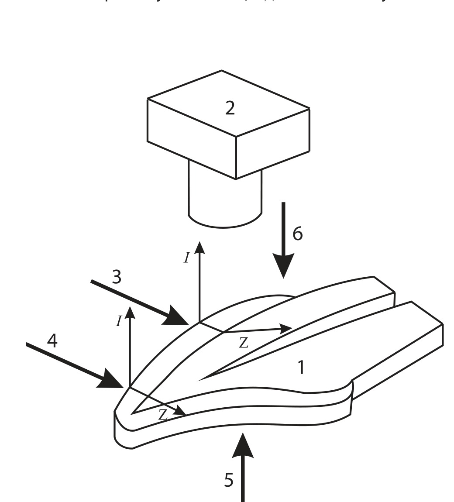
Рис. 1. Схема експерименту. 1 — шліф коронкової частини верхнього різця. 2 — фотоапарат. 3 — промінь лазера, що падає на вестибулярну поверхню емалі між середньою і пришийковою третиною (щілинна діафрагма). 4 — промінь лазера, що падає на поверхню емалі в середині різцевої третини (щілинна діафрагма). 5 — промінь лазера, що падає перпендикулярно площині шліфа з боку дна кювети (точкова діафрагма). 6 — промінь лазера, що падає перпендикулярно площині шліфа з боку фотоапарата (точкова діафрагма).
Результати
Характер поширення лазерного світла у твердих тканинах різців при падінні пучка лазера на вестибулярну поверхню емалі між середньою і пришийковою третиною в площині шліфа показано на фото 1 і 2. На фото 1 подано шліф бокового різця, у якого немає ознак склерозування дентину, а емаль ріжучого краю не стерта (молодий зуб). Оскільки шліф міститься у воді, не видно заломлення на зовнішній межі емалі, внаслідок чого напрямок поширення світла в емалі майже збігається з напрямком падіння лазерного пучка. При цьому напрямок поширення світла в дентині в основному не відповідає напрямку лазерного пучка. Ділянка в дентині, що світиться, витягнута у напрямку дентинових трубочок. Таким чином, видно, що після проходження емалі лазерне світло повертає в напрямку дентинових трубочок.
Аналогічна картина за тієї ж самої інтенсивності лазерного випромінювання спостерігається на фото 2. Напрям поширення світла в емалі збігається з напрямком падіння пучка. У дентині світловий потік повертається у напрямку дентинових трубочок. У зуба, що на фото 2, стертий ріжучий край, є ознаки склерозування дентину і облітерації порожнини зуба (старий зуб). Лазерний промінь падає на ділянку емалі, під якою дентин облітерований тільки під дентиноемалевим з'єднанням, що видно з фото 4.
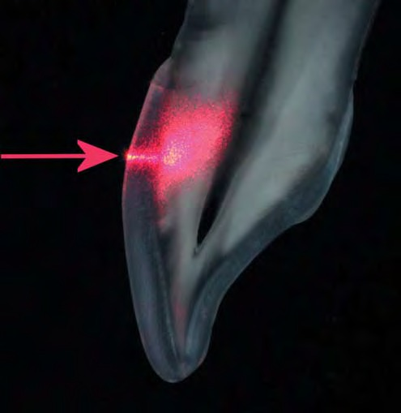
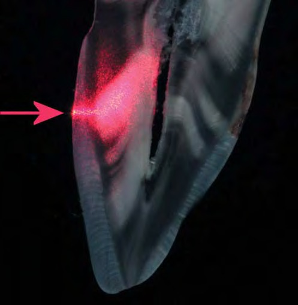
Фото 1. Поширення лазерного світла у твердих тканинах різця з несклерозованим дентином при падінні пучка (червона стрілка) на верхню межу середньої третини. Фото 2. Поширення лазерного світла у твердих тканинах різця зі склерозованим дентином при падінні пучка в тій самій ділянці.
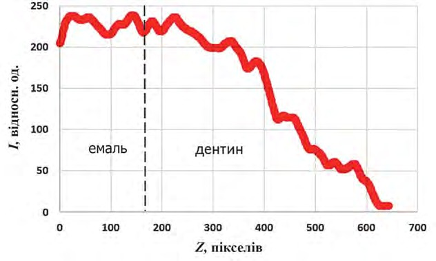
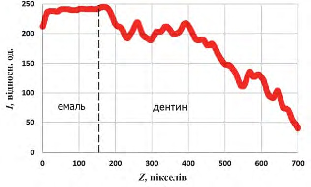
Рис. 2. Інтенсивність бічного розсіювання лазерного випромінювання по ходу його поширення у твердих тканинах різця (молодий зуб) при падінні пучка в зоні межі середньої та пришийкової третини. Тут і далі пунктиром показано дентиноемалеве з'єднання. Рис. 3. Те саме (старий зуб).
Аналіз графіків на рис. 2 і 3 засвідчує, що розподіл інтенсивності бічного розсіювання лазерного світла в системі «емаль — дентин» при падінні пучка між середньою і пришийковою третиною має один і той самий характер. При цьому в цілому інтенсивність загасання в дентині молодого зуба (рис. 2) виражена більше, ніж у дентині старого зуба (рис. 3). Також з графіка на рис. 3 видно, що безпосередньо під дентиноемалевим з'єднанням крива опускається, оскільки через склерозування ділянка дентину тут має знижену розсіювальну здатність.
Характер поширення лазерного світла у твердих тканинах тих же самих різців при падінні пучка лазера на вестибулярну поверхню в зоні середини ріжучої третини демонструють фото 3 і 4. У цих випадках інтенсивність падаючого лазерного пучка зменшена в 3 рази у порівнянні з тими, що подані на фото 1 і 2. З фото 3 видно, що лазерне світло, пройшовши крізь емаль, не розвертається у напрямку дентинових трубочок. У дентині спостерігається пляма, що інтенсивно світиться, за якою в піднебінній емалі світіння ледь помітне. На фото 4 світіння аналогічної плями в дентині менш виражене, а світіння в піднебінній емалі виражене більше. З поданих фотографій випливає, що при падінні світла упоперек дентинових трубочок відбувається збільшення розсіювання і зменшення пропускання світла дентином (фото 3), а при склерозуванні дентину розсіювання в ньому зменшується, а пропускання збільшується (фото 4).
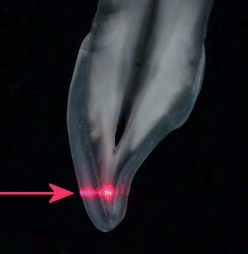
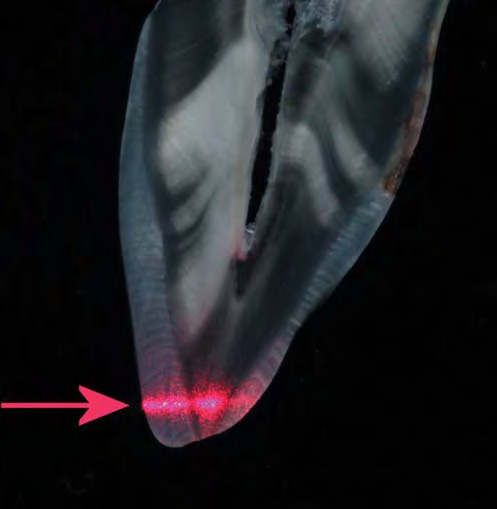
Фото 3. Поширення лазерного світла у твердих тканинах різця з несклерозованим дентином при падінні пучка в зоні середини ріжучої третини. Фото 4. Те саме зі склерозованим дентином.
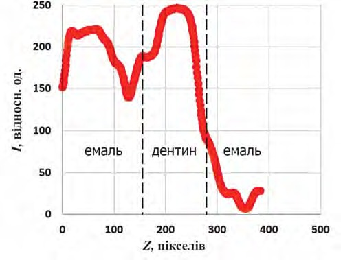
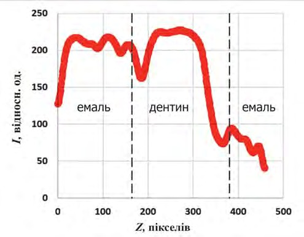
Рис. 4. Інтенсивність бічного розсіювання лазерного випромінювання по ходу його поширення у твердих тканинах різця (молодий зуб) при падінні пучка в зоні середини ріжучої третини. Рис. 5. Те саме (старий зуб).
Порівняння графіків на рис. 4 і 5 підтверджує сказане вище. Інтенсивність бічного розсіювання в дентині молодого зуба більша, ніж у дентині старого зуба. Зворотна ситуація спостерігається в піднебінній емалі, де інтенсивність бічного розсіювання менша в молодому зубі, ніж у старому. При цьому довжина оптичного шляху від вестибулярної до піднебінної поверхні емалі в молодому зубі менша, ніж у старому.
Характер поширення лазерного світла у твердих тканинах різця (старий зуб) при падінні пучка лазера однієї і тієї ж самої інтенсивності перпендикулярно площині шліфа показано на фото 5-8. На фото 5 видно, що проходження лазерного світла упоперек дентинових трубочок супроводжується його ослабленням і деформацією форми лазерного пучка: пучок витягується упоперек напрямку дентинових трубочок. В емалі ослаблення набагато менше, а деформації не відбувається: пучок має круглу форму (фото 6). При склерозуванні дентину ступінь ослаблення лазерного світла і деформації пучка прямо залежить від ступеня склерозування. При неповному склерозуванні, що спостерігається в ріжучій третині (фото 7), ослаблення світлового потоку і деформація пучка менші, ніж при проходженні світла через нормальний дентин. При повному склерозуванні (прозорий дентин) деформації пучка немає, а пропускання світла дентином більше, ніж емаллю (фото 8).

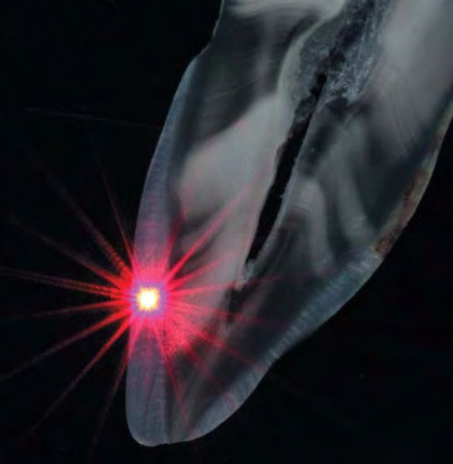
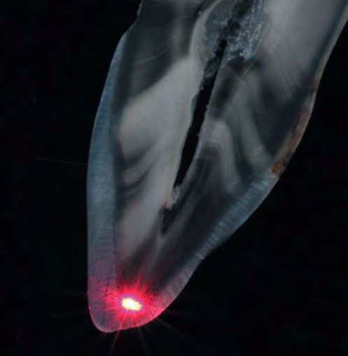
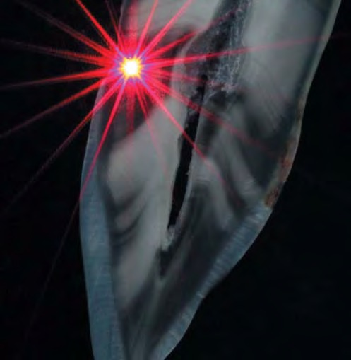
Фото 5. Проходження лазерного світла крізь несклерозований дентин різця упоперек дентинних трубочок. Фото 6. Проходження лазерного світла крізь емаль. Фото 7. Проходження лазерного світла крізь склерозований дентин упоперек дентинних трубочок. Фото 8. Проходження лазерного світла крізь прозорий дентин.
Характер поширення лазерного світла однієї і тієї ж самої інтенсивності у твердих тканинах молярів при падінні пучка перпендикулярно площині шліфа видно на фото 9-12. При проходженні світла крізь емаль вертикального шліфа моляра деформація лазерного пучка відсутня (фото 9). При проходженні світла крізь дентин того ж самого шліфа упоперек дентинових трубочок відбувається ослаблення світлового потоку і деформація форми пучка (фото 10). Деформація форми пучка відсутня при проходженні лазерного світла крізь емаль горизонтального шліфа аналогічного моляра (фото 11) і крізь дентин уздовж дентинових трубочок (фото 12). В останньому випадку лазерне світло входить у шліф з боку жувальної поверхні і проходить уздовж дентинових трубочок. При цьому діаметр пучка при проходженні через дентин зменшується, а світлота дентину в зоні проходження пучка найменш виражена, тобто дентин тут прозоріший.
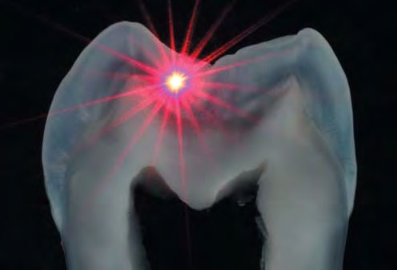
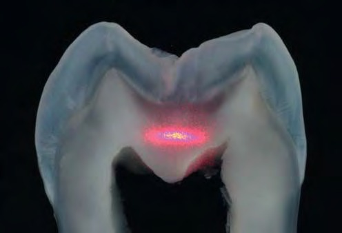
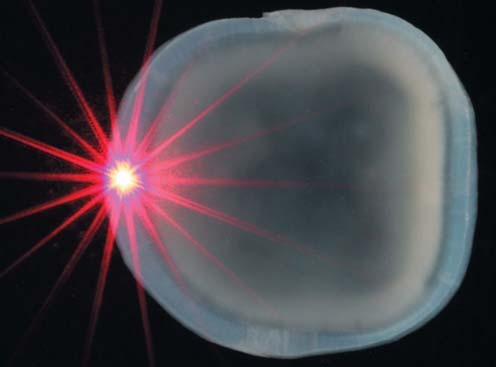
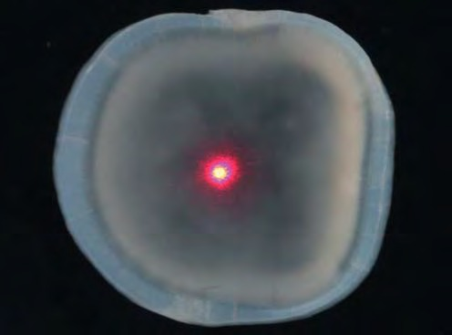
Фото 9. Проходження лазерного світла крізь емаль вертикального шліфа моляра. Фото 10. Проходження лазерного світла крізь дентин упоперек дентинних трубочок того ж самого шліфа. Фото 11. Проходження лазерного світла крізь емаль горизонтального шліфа моляра. Фото 12. Проходження лазерного світла крізь дентин того ж самого шліфа моляра уздовж дентинних трубочок.
Обговорення
Відомо, що дентин — це мінералізована тканина, особливістю якої є наявність дентинових трубочок, які пронизують основну речовину, не перериваючись, від порожнини зуба до дентиноемалевого з'єднання (ДЕЗ) і містять відростки одонтобластів. Діаметр дентинових трубочок і відстані між ними різняться залежно від топографії. У прилеглому до пульпи коронковому дентині діаметр трубочок становить 2-3 мкм, а відстань між ними близько 2 мкм. В зоні ДЕЗ діаметр дорівнює 0,7-1,0 мкм, а середня відстань між сусідніми трубочками становить близько 15 мкм [2, 3]. У зовнішній і середній третині дентинові трубочки контактують між собою за рахунок тонких бічних відгалужень.
Діаметр цих відгалужень близько 180 нм, а відстань між ними близько 2 мкм [4]. Кристали апатитів дентину набагато менші, ніж кристали апатитів емалі, і мають інші пропорції довжини і поперечних розмірів. Поблизу просвіту трубочок їх середні розміри 36x26x10 нм, між трубочками — 70x36x10 нм. Просторово кристали дентину організовані в глобули, де їх кристалографічні осі розташовані концентрично. Таким чином, осі кристалів дентину орієнтовані в різних напрямках. У межах однієї глобули може перебувати кілька десятків трубочок. Кристали дентину щільно пов'язані з білковими волокнами за рахунок утворення електростатичних зв'язків [5]. Тому з оптичної точки зору основна речовина дентину є асоційованою сумішшю білків, гідроксиапатиту і води. Показник заломлення вмісту дентинових трубочок близький до показника заломлення води (1,33). Показник заломлення основної речовини дентину, за різними даними, становить від 1,52 [6] до 1,55 [7].
Характер взаємодії світла з дентином зумовлений будовою дентину і напрямком падіння світла. Якщо світло, пройшовши емаль, входить у дентин під кутом менше 90° до напрямку дентинових трубочок, то в несклерозованому дентині воно переважно поширюється уздовж дентинових трубочок [8, 9]. Імовірно, що світло поширюється по основній речовині, зазнаючи повного внутрішнього відбиття на межах «основна речовина — порожнина дентинної трубочки». У цьому випадку має місце хвилевідне поширення світла в дентині, а дентин можна розглядати як систему оптичних хвилеводів. Мала сумарна площа поперечного перерізу дентинових трубочок в зоні ДЕЗ сприяє входженню світла в основну речовину, забезпечуючи широкий кут захоплення випромінювання, що пройшло крізь емаль. Інакше кажучи, світло поширюється вздовж дентинових трубочок завдяки потраплянню в широкі апертурні кути «хвилеводів» дентину. При цьому через напрямки дентинових трубочок, що сходяться, світло «фокусується» до порожнини зуба (фото 12).
Крім спрямованого уздовж трубочок поширення світла, має бути його розсіювання, завдяки якому видно хід поширення світла в дентині шліфа при падінні пучка світла в його площині (фото 1, 2). Можна припустити, що розсіювання світла в дентині має дві складові (ізотропну та анізотропну). Ізотропна складова — це розсіювання світла на всі боки через наявність флуктуацій щільності в основній речовині, зумовлених чергуванням волокон білка, кристалів гідроксиапатиту, тонких бічних відгалужень трубочок і т.п. Анізотропна складова зумовлена розсіюванням світла на неоднорідностях «основна речовина — порожнина трубочки». Її інтенсивність збільшується в міру збільшення кута падіння світла щодо напрямку трубочок від 0° до 90° [10]. При цьому у відповідності з оптичним законом оборотності [11] світло, розсіяне назад, також основною своєю частиною має зазнавати повного внутрішнього відбиття на межах трубочок і повертатися уздовж їх напрямку.
У разі падіння світла упоперек трубочок (під кутом 90°) світло входить у дентин поза апертурними кутами, зазнаючи максимального розсіювання, для пояснення якого можна скористатися теорією дифракції на періодичній системі діелектричних циліндрів. З точки зору оптики, основну речовину дентину можна уявити як оптично квазіоднорідний діелектрик, де на однаковій відстані один від одного розташовані діелектричні циліндри (порожнини дентинових трубочок) з іншим показником заломлення. Із співвідношення відстані між сусідніми циліндрами до їх довжини випливає, що вони розташовані майже паралельно один одному, оскільки кут розбіжності між сусідніми циліндрами мізерно малий. При падінні світла під прямим кутом до осі окремого циліндра кут розсіювання максимальний і міститься в площині, перпендикулярній до осі циліндра [10].
При падінні плоскої монохроматичної хвилі на періодичний ряд циліндрів перпендикулярно напрямку їх осей в результаті дифракції повинні утворюватися дифракційні порядки, які у вигляді прохідних плоских хвиль є падаючим полем для подальших рядів циліндрів. Відображені порядки можуть служити падаючим полем для попередніх рядів циліндрів. З огляду на те, що кількість таких рядів велика, світловий потік, що падає перпендикулярно напрямку дентинових трубочок, повинен значно послаблюватися, поширюватися упоперек їх напрямку та розсіюватися назад. Такій ситуації відповідають зображення на рис. 4, фото 3, 5, 10. Аналогічні дифракційні картини, подані на фото 5 і 10, спостерігалися при падінні лазерного пучка упоперек трубочок з боку об'єктива фотоапарата. Раніше аналогічні дифракційні картини було показано на фронтальному шліфі бічного різця верхньої щелепи при проходженні лазерного світла крізь дентин у вестибуло-оральному напрямку [12].
У процесі склерозування дентину якась частина трубочок зменшується в діаметрі, а якась повністю облітерується. Через повну облітерацію кількість трубочок в одиниці об'єму зменшується, а отже, відстань між трубочками, що залишилися, значно збільшується. З одного боку, це має вести до зменшення дифракційних ефектів і збільшення прозорості дентину при падінні світлового пучка упоперек дентинових трубочок (фото 4, 7), з другого — до втрати дентином хвилевідних властивостей.
Описані вище оптичні ефекти в дентині мають безпосередній стосунок до естетики зубів, а саме до формування кольору. Будучи напівпрозорими об'єктами, тверді тканини зуба відбивають, пропускають і поглинають світло. При падінні білого світла на будь-який напівпрозорий об'єкт його колір визначається кількістю і спектральним складом світла, що його об'єкт відбиває. Світло, відбите межею розподілу «повітря — об'єкт» (френелівське відбиття), — це світло джерела. Воно не несе інформації про колір об'єкта. Інформацію про колір об'єкта несе в собі світло, яке виходить з його об'єму [11]. Кількість і спектральний склад такого світла залежить від коефіцієнтів розсіювання і поглинання, а також від товщини об'єкта або середовища.
При проходженні світла джерела через середовище, яке розсіює і поглинає (зразок композиту, емаль, дентин), світловий потік ослаблюється. Ослаблення світлового потоку відбувається за експоненціальним законом, і воно тим більше, чим більші коефіцієнти розсіювання і поглинання середовища. Ослаблення світлового потоку за рахунок поглинання означає його безповоротну втрату через перетворення на тепло. Ослаблення за рахунок розсіювання супроводжується поверненням частини світла, розсіяної назад, у бік джерела. Розсіяне назад світло — це світло, відбите об'ємом середовища. Воно містить ті довжини хвиль, що не поглинулися пігментами середовища і не пройшли крізь середовище за його межі. Інтенсивність світла, відбитого об'ємом, збільшується при збільшенні коефіцієнта розсіювання і зменшується при збільшенні коефіцієнта поглинання.
Якщо товщина напівпрозорого об'єкту на шляху світлового потоку білого світла більша, ніж так звана «нескінченна» (X∞), то кольоронасиченість такого об'єкта (наприклад, у жовто-червоній зоні) визначається кількістю пігменту в одиниці об'єму [11]. Якщо товщина напівпрозорого об'єкта менша нескінченної (X∞), то у відбитому світлі зі зменшенням товщини кольоронасиченість зменшується. Це відбувається як за рахунок зменшення кількості центрів поглинання на шляху світлового потоку, так і за рахунок того, що довгохвильове світло більшою своєю частиною проходить крізь об'єкт і не відбивається його об'ємом через обернено пропорційну залежність розсіювання світла від довжини хвилі (ефект опалесценції).
Оскільки коефіцієнт розсіювання дентину на порядок більший, ніж коефіцієнт поглинання, то нескінченна товщина дентину визначається коефіцієнтом розсіювання. При цьому величина коефіцієнта розсіювання прямо пропорційно залежить від кута падіння світла на дентинові трубочки [10]. Таким чином, при його збільшенні нескінченна товщина зменшується і, відповідно, зменшується глибина проникнення світла в дентин. Чим більша глибина проникнення світла в дентин, тим більша його кольоронасиченість, оскільки остання визначається кількістю поглинаючих центрів (колорантів) на шляху світлового потоку в прямому і зворотному напрямку. Чим менша глибина проникнення світла в дентин через більшу величину коефіцієнта розсіювання, тим менше поглинаючих центрів на шляху світлового потоку, відповідно, менша кольоронасиченість і більша світлота.
Наведені тут результати і обговорювані закономірності повністю узгоджуються з отриманими раніше даними спектрально-колориметричних досліджень [13]. Спектр відбиття, знятий з дентину зуба при падінні світла упоперек трубочок, засвідчив більшу світлоту і меншу кольоронасиченість, а спектр, знятий з дентину того самого зуба при падінні світла уздовж трубочок, — більшу кольоронасиченість і меншу світлоту. Колориметрична оцінка вестибулярних поверхонь зубів 21, 23, 26 одного і того ж самого пацієнта у всіх випадках показала зменшення кольоронасиченості в напрямку від ясен до ріжучого краю або жувальної поверхні. Було також встановлено, що ступінь зменшення кольоронасиченості в напрямку від ясен до ріжучого краю найбільш виражена у різця і найменш — у ікла, а вся коронка ікла має більшу кольоронасиченість і меншу світлоту. Пояснити велику кольоронасиченість ікла можна входженням світла в його дентин під меншими кутами до напрямку дентинових трубочок у порівнянні з такими у різця. Менша величина кутів зумовлена більшим відхиленням трубочок від вертикальної осі коронки через більший вестибуло-оральний розмір [13], а також більшим відхиленням світлового потоку до центру коронки після заломлення на межі «повітря — емаль» через вираженішу сферичність вестибулярної поверхні [14]. Підвищена кольоронасиченість ікла допомагає визначити колір необхідних відтінків матеріалів для естетичної реставрації.
Якщо визначення світлоти зазвичай не викликає труднощів, то визначення тону, що характеризує колірну приналежність відтінку (наприклад, A, B, C, D за шкалою VITA) при вираженій світлоті зубів, може викликати труднощі. Тому при визначенні тону прийнято орієнтуватися на пришийкову третину ікла верхньої щелепи, де має місце найбільша кольоронасиченість.
Слід зазначити, що у різців оптичний шлях світла, що проходить крізь дентин ріжучої третини у вестибуло-оральному напрямку, обмежений лінійними розмірами. Тому при збільшенні прозорості дентину через вікове склерозування його товщина в цьому напрямку стає меншою нескінченної, що робить ріжучу третину не тільки менш кольоронасиченою, але й прозорішою для довгохвильового світла [15]. У такій ситуації зуби стають багатокольоровішими за рахунок опалесценції цієї ділянки і для їх реставрації доцільно використовувати відтінки зі зниженою опаковістю [16].
Висновки
У першій публікації про спрямоване поширення світла вздовж дентинових трубочок був описаний ефект збільшення — зменшення розмірів об'єкта при накладанні на нього поперечних шліфів молярів [17]. Цей ефект спостерігався як на кальцинованих шліфах, так і після їх декальцинації. У випадку з кальцинованими шліфами ефект був названий ефектом «світлових труб», а у випадку з декальцинованими шліфами — «оптоволоконним» ефектом. Стаття з'явилася в той час, коли ще не було композитів світлового отвердіння і стоматологи-терапевти не проводили прямі естетичні реставрації в їх сучасному розумінні. Тому про якесь клінічне значення цього ефекту мови бути не могло.
Сьогодні можна сказати, що спрямоване поширення світла в дентині і оптичні ефекти, зумовлені хвилевідно-розсіювальними властивостями дентину або їх відсутністю, мають цілком визначене клінічне значення. По-перше, хвилевідно-розсіювальні властивості дентину можуть впливати на колірну гаму зуба, про що йшлося вище. По-друге, при навмисному чи ненавмисному опроміненні композиту світлового отвердіння через тверді тканини може відбуватися перерозподіл світла полімеризуючого джерела в порожнину зуба, в результаті чого збільшується променеве навантаження на пульпу [18]. Останнє відбувається, якщо дефект, що реставрується, не перериває хід дентинових трубочок від опромінюваної поверхні зуба до його порожнини.
Література
- Грисимов В., Хиора Ж., Шерстобитова А. Факторы, определяющие цвет композита в реставрации // ДентАрт. — 2011. — № 2. — С. 19-27.
- Garberoglio R., Brannstrom M. Scanning electron microscopic investigation of human dental tubules // Arch. Oral Biol. — 1976. — Vol. 21, №6. — P. 355-362.
- Mjor I.A. Dentin and pulp. In: Mjor I.A., Feyerskov O., eds. Histology of the human tooth. — 1st edn. — Copenhagen: Munksgaard. — 1979. — P. 43-73.
- Thomas H.F. The extend of the odontoblast process in human dentin // J. Dent. Res. — 1979. — Vol. 58, № 1. — P. 105-110.
- Boonstra W.D. Protein-apatite interactions in dentine: Ph. D. Dissertation / State university of Groningen. — Groningen (The Netherlands), 1991. — 101 p.
- Zijp J.R., ten Bosch J.J. Theoretical model for the scattering of light by dentin and comparison with measurements // Appl. Opt. — 1993. — Vol. 32, № 4. — P. 411-415.
- Grisimov V.N. Refractive index of bulk dentin. In: Advanced Laser Dentistry. Proc. SPIE. — 1994. — Vol. 1984. — Р. 2-5.
- Грисимов В.Н. Характер распространения света в твердых тканях зуба: Деп. в НПО «Союзмединформ» 05.04.89, № 17465. — 10 с.
- Альтшулер Г.Б., Грисимов В.Н. Эффект волноводного распространения света в зубе человека // Докл. АН СССР. — 1990. — Т. 310, № 5. — С. 1245-1248.
- Zijp J.R. Optical properties of dental hard tissues: Ph. D. Dissertation / State university of Groningen. — Groningen (The Netherlands), 2001. — 103 p.
- Джадд Д., Вышецки Г. Цвет в науке и технике: Перевод с англ. Под ред. Л.Ф. Артюшина. — М.: Мир, 1978. — 592 с.
- Грисимов В., Хиора Ж. Френелевская оптика и эстетика переднего зуба // ДентАрт. — 2010. — № 1. — С. 20-26.
- Грисимов В., Радлинский С. Влияние оптической анизотропии дентина на цвет зуба // ДентАрт. — 2006. — № 3. — С. 26-32.
- Грисимов В.Н. Влияние оптической анизотропии дентина на эстетику зуба // Институт стоматологии. — 1999. — № 2. — С. 35-37.
- Грисимов В., Приходько К. Оценка степени прозрачности твердых тканей зуба // ДентАрт. — 2005. — № 3. — С. 35-40.
- Грисимов В., Хиора Ж. Факторы многоцветности зубов и реставраций // ДентАрт. — 2013. — № 1. — С. 15-24.
- Walton R.E., Outhwaite W.C., Pashley D.F. Magnification — an interesting optical property of dentin // J. Dent. Res. — 1976. — Vol. 55, № 4. — P. 639-642.
- Grisimov V.N. Redistribution of the halogen light source radiation by hard dental tissues. In: Medical Applications of Lasers in Dermatology, Ophthalmology, Dentistry, and Endoscopy. Proc. SPIE. — 1997. — Vol. 3192. — P. 62-66.